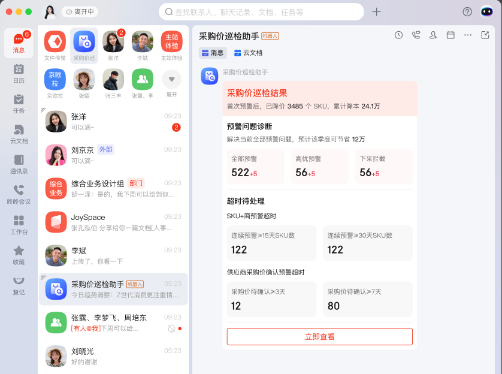
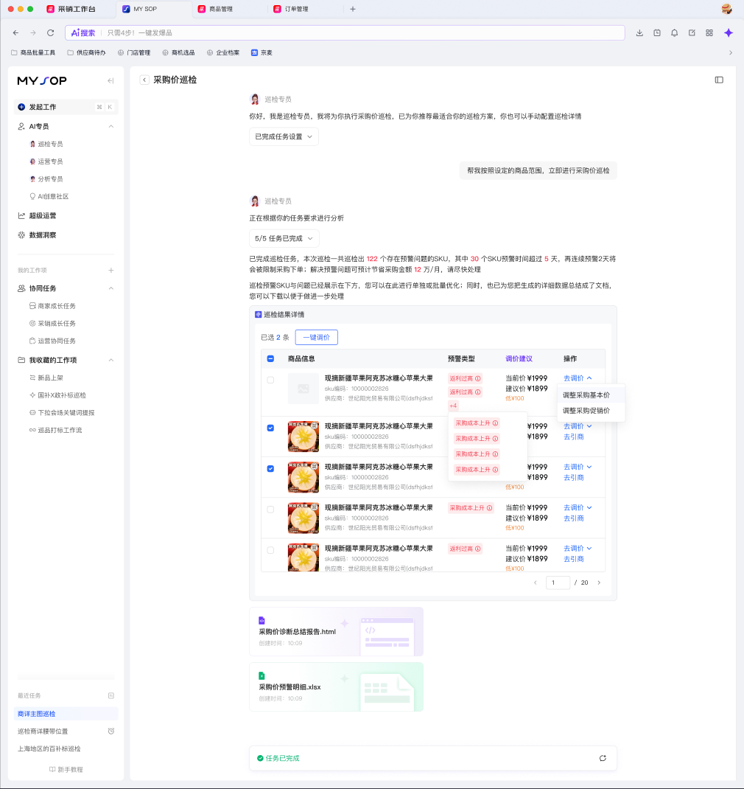
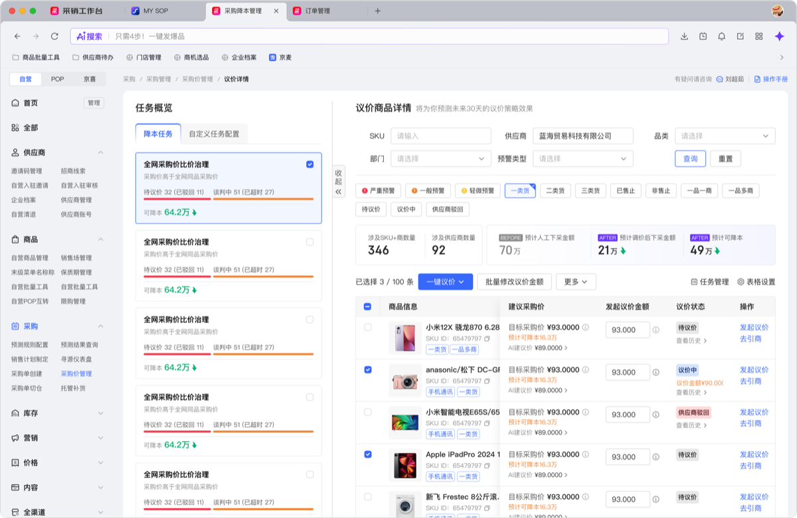
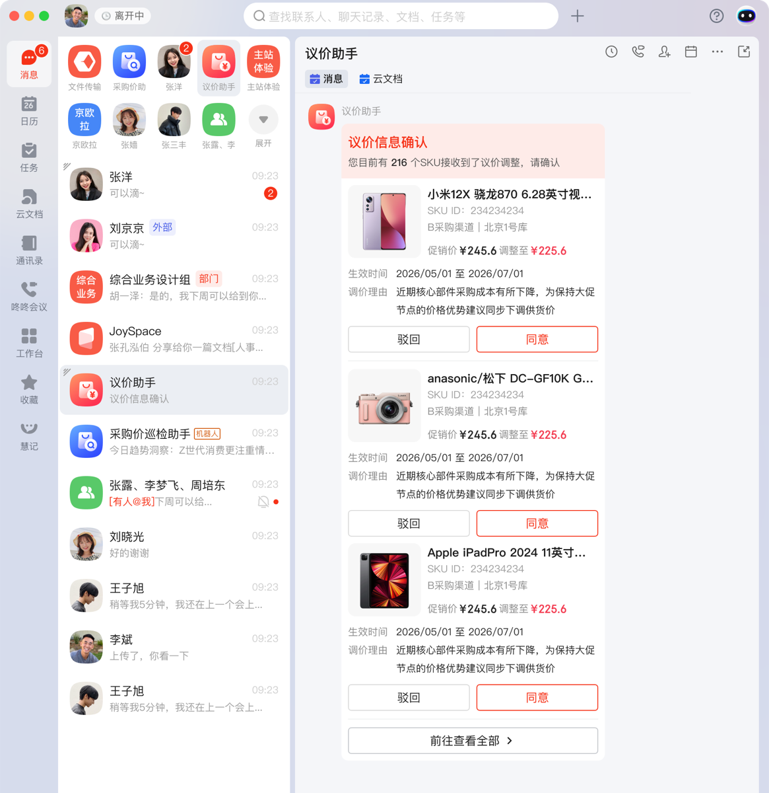
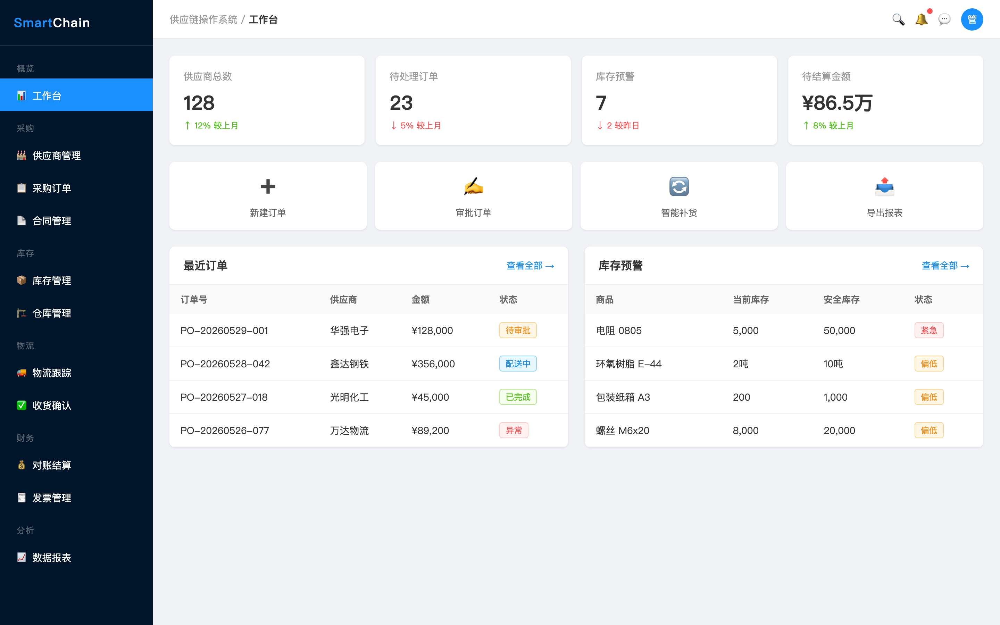
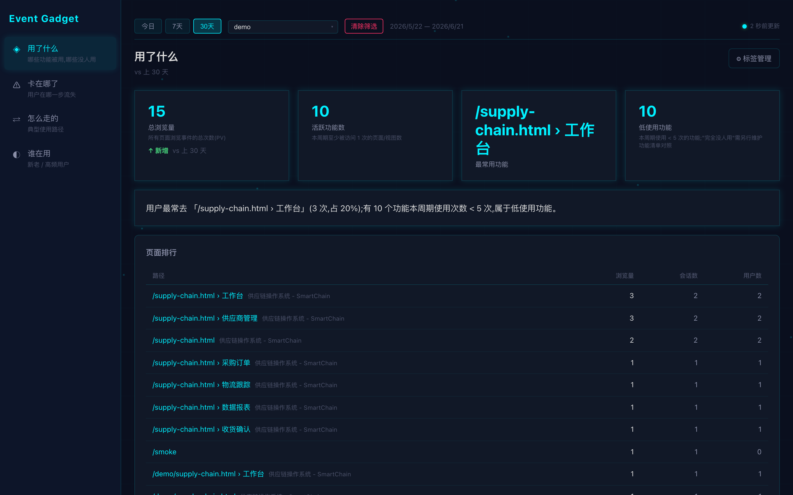
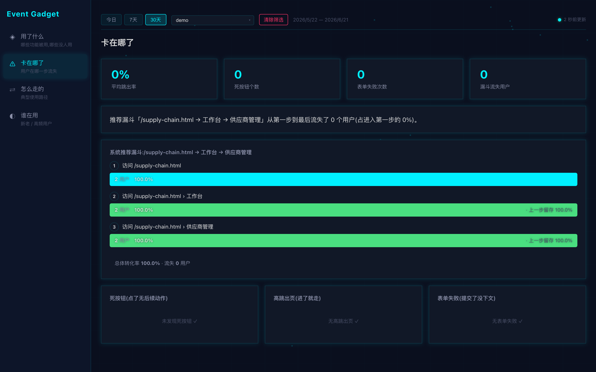
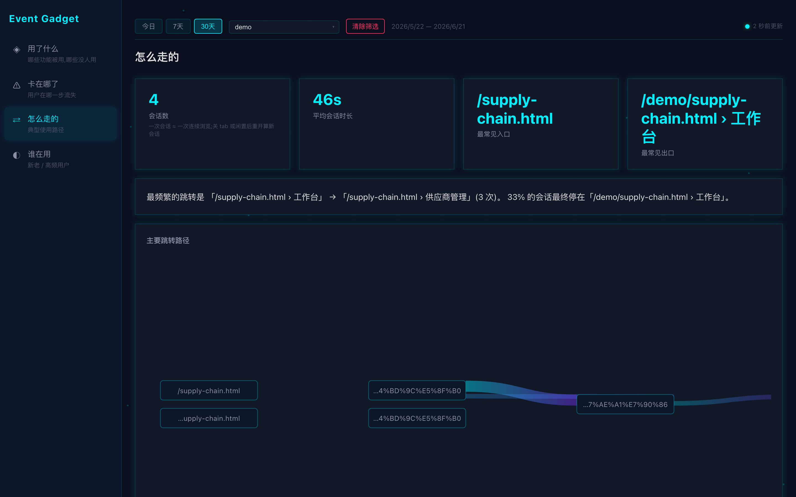
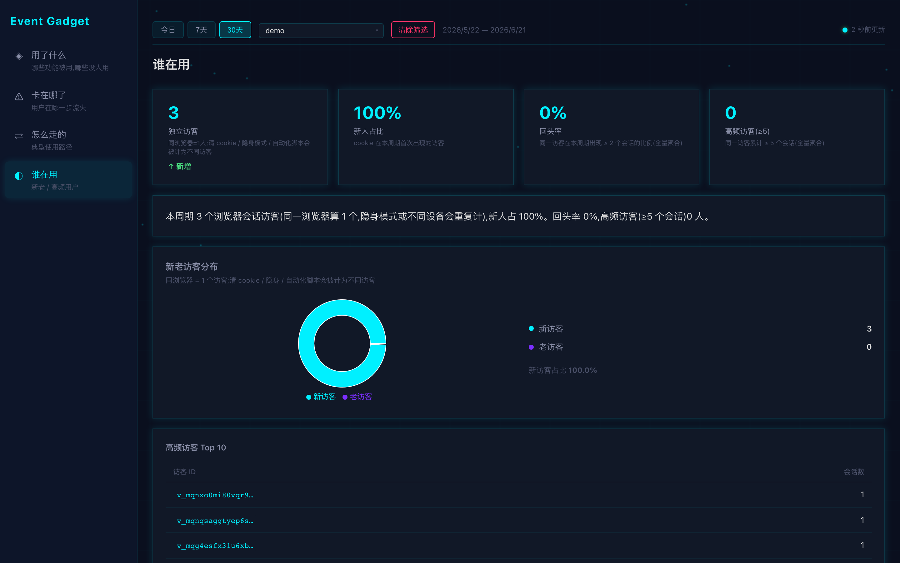

为支撑「双降」工作,业务侧已在子午线多个站点布设了埋点。但做核心分析时, 遇到了一系列系统性的取数障碍 — 不是某个站点的小问题,而是埋点链路本身的局限。
| 「双降」当前埋点现状 | |
|---|---|
| 业务目标 | 采购 SKU 降价、采购降本 |
| 埋点上报 位置 |
子午线 · 京me 站点 / 子午线 · 一站式工作台 / 子午线 · 采购价管理 — 分散在 3 个站点,各自规范不同 |
| 业务场景 |
采销触达
 采购价巡检结果查看
 多维比价 · 一键议价
 供应商触达
 |
主要面向用 Claude Code / Cursor / Lovable 等 AI 工具快速产出 HTML 原型来验证业务想法的个人开发者 / 小团队。 以前要验证一个新产品 idea 有没有人用、用户行为是不是符合预期,要么靠主观感受、要么得搭后端 + 接埋点 SDK + 配后台 — 几天才能搞定一次。 这个工具让你不在公司部署、不依赖团队埋点规范,加一行 script 就能在新做的 HTML 上拿到完整行为数据。
工具分两部分:浏览器端 SDK(负责采集)+ 智能分析看板(负责呈现)。 以下按"接入 → 采集 → 看板分析 → 应用到双降场景"的顺序展示。
在你的新 HTML 原型(无论是 Claude Code 出的、还是手写的、还是 Lovable 之类工具生成的)末尾,加这一行:
接入后,SDK 在用户浏览器内自动采集以下事件并 5 秒内批量上报:
下图是接入 Event Gadget 的演示原型(用 AI 出的一个供应链管理后台 demo) — 除了 HTML 末尾加一行 script 之外没有任何改动,SDK 在后台静默运行,自动识别左侧导航、顶部 Tab、卡片点击、表格交互。对用户完全无感知。

↑ 演示原型:接入 SDK 后页面和接入前完全一致,埋点对用户/对页面性能都无感知
看板不堆图表,而是直接回答 4 个业务问题。每页顶部一句话白话结论 + 4 个 KPI + 主图 + 详情可下钻。

↑「用了什么」— 顶部一句话告诉你"用户最常去 X(占 N%);Y 个功能是低使用功能",下方是按访问量排序的功能榜单

↑「卡在哪了」— 自动识别死按钮(点了无后续)、高跳出页、表单失败,按"影响人数 × 比例"排序,定位最严重卡点

↑「怎么走的」— Sankey 图自动呈现"从哪进来 → 中间经过 → 在哪退出",任何一段路径可下钻到具体会话回放

↑「谁在用」— 新人/回访/未知三段访客分布、回头率、高频访客 Top 10,可点任意访客看 ta 的完整使用链路
几种典型的 idea 验证 / 原型评估场景,接入后能从看板上直接看到答案:
| 想知道什么 | 这个工具怎么回答你 |
|---|---|
| 这个新功能真的有人用吗? 原型放出去后,核心功能被使用的比例 |
✓ 看板「用了什么」直接给出页面/视图使用排行 ✓ 顶部一句话告诉你"用户最常去 X,占 N%;Y 个功能几乎没人用" ✓ 配合 CTR 排行看具体按钮的吸引力 |
| 用户在哪一步流失? 注册/下单/调研填写过程中哪一步走不下去 |
✓ 看板「卡在哪了」自动识别死按钮(点了无后续动作) ✓ 自动识别高跳出页(进了就走)、表单失败 ✓ 按"影响人数 × 比例"排序,最严重卡点排在最前 |
| 用户的真实使用路径? 跟你预想的流程一样吗,有没有意外的"野生路径" |
✓ 看板「怎么走的」Sankey 图直接呈现"从哪进 → 中间经过 → 在哪离开" ✓ 任意一段路径可下钻到具体会话回放 ✓ 最常见入口/出口一目了然 |
| A 版 vs B 版哪个好? 两个方案不知道选哪个,数据说话 |
✓ 两版各设不同 data-app-id,各发一半人 ✓ 看板顶部 App 切换器秒切两边数据对比 ✓ 完成率、卡点数、停留时长 — 一眼比出来 |
| 新人 vs 老用户行为差异? 第一次来的人 vs 回访的人怎么用 |
✓ 看板「谁在用」自动区分新人 / 回访 / 未知 ✓ 高频访客 Top 10,点进去看 ta 的完整使用链路 ✗ 跨设备识别(同一人在手机+电脑算两个人) — 工具不采,需自行透传 user-id |
在你的 HTML 原型(AI 生成的、手写的、Lovable 等工具生成的)末尾插入 SDK,起个 app-id 即可,无需改其它代码
把页面链接发给 5-10 个目标用户(同事 / 测试用户 / 真实客户),让 ta 们按日常方式操作,SDK 后台静默采集
打开看板 → 选你刚才设的 app-id + 时间窗 → 5 秒内即可看到真实用户行为数据,决定要不要继续投入
| 能力 | 状态 | 说明 |
|---|---|---|
| SDK + 后端 + 看板 | ✓ 已就绪 | 4 个分析页面、5 类自动事件、隐私过滤、视图自动识别 — 全部可用,Demo 已跑通 |
| 本地 / 个人服务器部署 | ✓ 支持 | 单服务部署(server 同时托管 SDK + 看板 + Demo),一条 npm start 即可运行,无外部依赖 |
| Idea 验证 / 原型评估 | ✓ 适合 | 定位场景。每天几千到几万事件无压力,SQLite 单机即可承载 |
| 访问控制 / SSO | ⚠ 需自加 | 看板默认开放访问,只适合内部使用;对外分享前需自行加访问控制(Nginx Basic Auth / 等) |
| 大流量 / 生产产品 | 需迁移 | 每天百万+事件量需迁到 Postgres / 云数据库;不是工具当前的目标场景 |